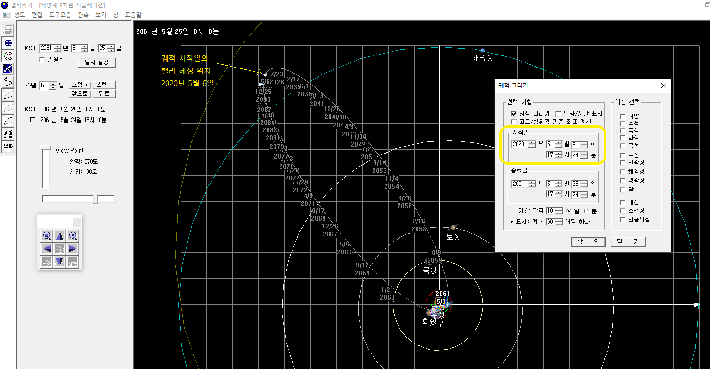
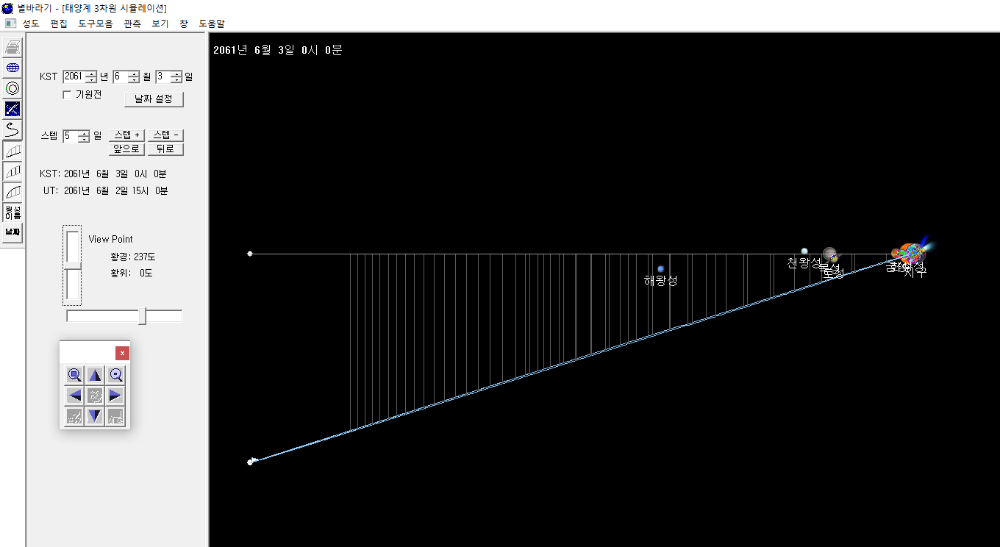
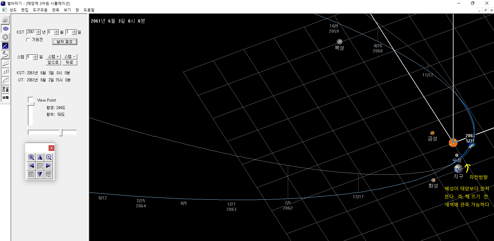

핼리 혜성 3차원 시뮬레이션
우리가 맨눈으로 볼 수 있는 혜성은 10~20년에 하나 정도로 매우 드물다. 그나마, 공전주기가 300년 이상으로 아주 길거나, 포물선 궤적을 그리며 다시는 지구를 찾지 않는 경우가 대다수이다. 그런데, 약 76년마다 종종 매우 밝은 모습으로 우리를 찾아와 주는 혜성이 있으니, 바로 핼리 혜성이다. 첫 번째로 확인된 주기 혜성이다. 그래서 공식 명칭도 '1P/Halley'이다. P는 Periodic의 약자이고 번호 1이 붙어 있다. 공전 주기는 약 76.3년이고, 최근의 근일점은 1986년 2월 5일이었고, 다음 근일점은 2061년 6월 1일이다.
40여년 후에 핼리 혜성이 어떤 모습으로 지구에 다가올 지 별바라기로 확인해 보자. 그림을 클릭하면 확대하여 볼 수 있다.
- 그림 1. 핼리 헤성은 해왕성보다 조금 더 먼 곳까지 여행한다. 2020년 5월 현재 태양과 가장 먼 원일점에 다가가고 있다.
- 그림 2. 핼리 혜성의 궤도면은 황도면과 약 27.7도 기울어져 있다. 궤도의 대부분은 황도면 아래에 있다.
|  |  |
| 그림1. 위에서 바라본 궤도 | 그림2. 옆에서 바라본 궤도 |
- 그림 3. 돌고래가 수면 위로 점프하듯 황도면 위로 잠깐 올라와 근일점을 지나고 다시 황도면 아래로 내려간다. 2061년에는 근일점 근처에서 지구와 가까이 있어 밝은 혜성이 될 것임을 예측할 수 있다. 예를 들어, 만약 지구가 금성의 위치에 있다면, 혜성과의 거리도 멀고 또 태양이 혜성을 가리면서 지구에서 관측하기 어렵다.
- 그림 3. 황도면 위에서 볼 때 태양의 오른쪽에 혜성이 있으므로 혜성이 먼저 뜬 후에 태양이 뜬다. 즉, 해 뜨기 전 새벽에 혜성을 관측할 수 있다.
- 그림 4. 근일점을 지날 때, 태양-혜성의 거리는 0.58 AU이다. 즉, 지구 공전 궤도 안쪽으로 돌아 나가는 모습을 확인할 수 있다. 태양-지구의 거리가 1 AU 이다.
|  |

|
| 그림 3, 4. 근일점 주변 확대 | |
기타 사항
- 혜성은 크기가 작고 가볍기때문에 궤도가 계속해서 변한다. 예를 들어 목성 근처를 지나면 목성 중력의 영향으로 혜성의 궤도가 바뀌게 된다.
- 따라서, 지금의 궤도요소로는 과거 또는 미래의 혜성 모습을 계산하기 어렵다. 2061년의 핼리 혜성도 지금 예즉하는 궤도와는 조금 다르게 우리에게 다가올 것이다.
- 혜성의 꼬리는 태양풍의 영향으로 태양 반대 방향으로 뻗어 나간다. 별바라기에서는 아직 이 부분이 구현되어 있지 않으니 감안해서 보자.
- 혜성이 지구 물의 원천이라는 설도 있다.즉, 우리가 마시는 물은 지구의 나이보다도 더 오래된 50억년 전에 만들어져 혜성 속에 존재하다가, 혜성이 지구에 충돌할 때 지구로 왔다는 것이다. 수 많은 커다란 혜성이 지구와 충돌했을 것이다. 지금은 태양계가 많이 안정되어서 혜성의 수도 적고, 혜성과 행성이 충돌하는 현상도 드물게 일어 난다. (1994년 슈메이커-레비 혜성이 목성에 충돌했었다)
별바라기 홈 최종 변경: 2020년 05월 31일